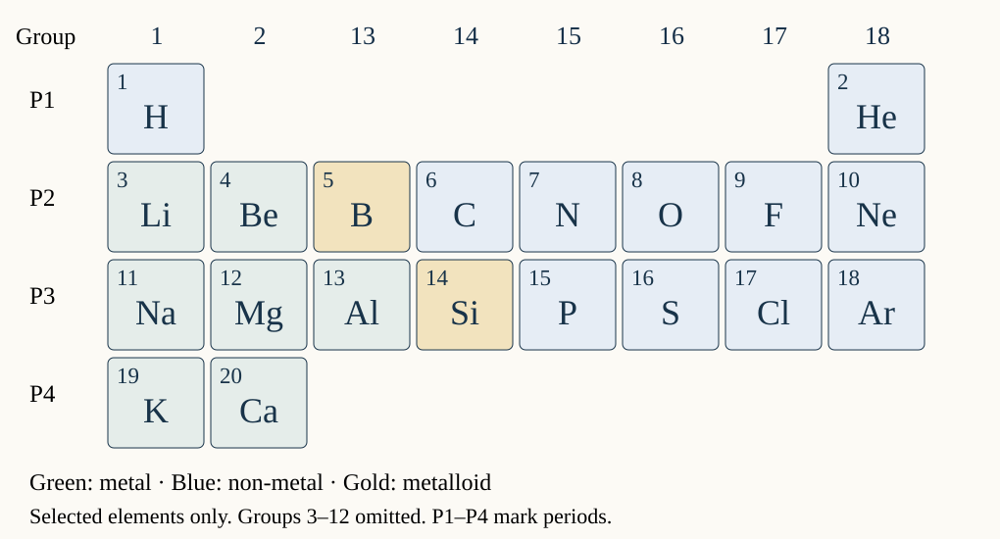

How are elements organised?
Answer in your book or on this sheet. Keep your first attempt. After feedback, explain the improvement and answer a different example.
Recommend a material for a UAE solar support
Work alone. Use only the supplied data for this fictional design brief.
| Element | Density (g/cm³) | Electrical conduction | Shaping |
|---|
| Aluminium | 2.7 | Good | Malleable |
| Copper | 9.0 | Good | Malleable |
| Sulfur | 2.1 | Poor | Brittle |
- Choose the best candidate for a low-mass support at the same volume that can be shaped. Explain your choice. [3]
- Explain why the lowest-density option is unsuitable for shaping. [1]
- Name one further test and explain why the recommendation remains provisional. [2]
Can the improved rule handle a new sample?
Close support. Answer the fresh questions alone in your book.
- R is malleable and conducts electricity. Give its likely classification and two reasons.
- Do those observations reveal its exact group or period? Explain.
Can you read a different pair of positions?
Answer alone using the table. Do not open the support.

Open larger periodic table ↗- State potassium’s group and period.
- State aluminium’s group and period.
- Which comes first by atomic number: neon Z10 or sodium Z11?